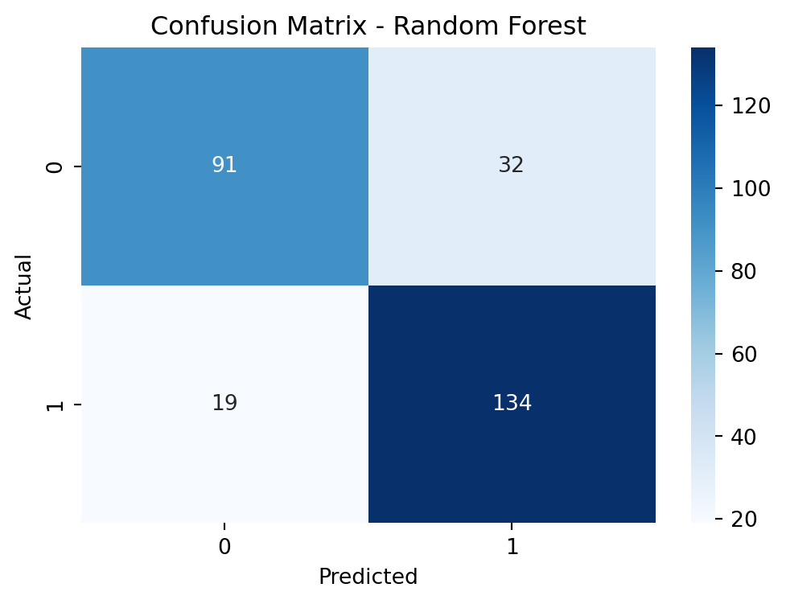

Using machine learning methods—KNN, Random Forest, and Logistic Regression—to predict heart disease diagnosis with patient data.
Description
Heart disease is the world’s leading cause of death, taking around 17.9 million lives yearly, according to the World Health Organization (WHO). Early identification of high-risk individuals is crucial in preventing premature deaths.
Diagnosing heart disease is complex, often relying on patient symptoms and examinations. Analyzing vast clinical data using data science helps us better understand and predict heart disease occurrence.
trestbps - resting blood pressure (in mm Hg on admission to the hospital)
chol - cholesterol in mg/dl
thalach - maximum heart rate achieved
oldpeak - ST depression induced by exercise relative to rest. ‘ST’ relates to the positions on the electrocardiographic (ECG) plot.
ca - number of major vessels (0-3) colored by flouroscopy. Fluoroscopy is one of the most popular non-invasive coronary artery disease diagnosis. It enables the doctor to see the flow of blood through the coronary arteries in order to evaluate the presence of arterial blockages.
1 = having ST-T wave abnormality (T wave inversions and/or ST elevation or depression of > 0.05 mV)
2 = showing probable or definite left ventricular hypertrophy by Estes’ criteria
exang - exercise induced angina. Angina is a type of chest pain caused by reduced blood flow to the heart.
1 = yes
0 = no
slope - the slope of the peak exercise ST segment. (ECG)
1 = upsloping
2 = flat
3 = downsloping
thal - A blood disorder called thalassemia
3 = normal blood flow
6 = fixed defect (no blood flow in some part of the heart)
7 = reversable defect (a blood flow is observed but it is not normal)
disease - refers to the presence of heart disease in the patient. It is integer valued from 0 (no presence) to 4. In this single dataset, ‘0’ signifies the absence of heart disease, while ‘1’ indicates diagnosed heart disease.
Exploratory data analysis (EDA)
Numeric data summary
Code
# Summary statistics for numeric datanumeric_cols = ['age', 'trestbps', 'chol', 'thalach', 'oldpeak', 'ca']numeric_summary = df[numeric_cols].describe().transpose()print("Summary Statistics for Numeric Columns:")print(numeric_summary)# Distribution plots for numeric attributesplt.figure(figsize=(12, 8))for i, col inenumerate(numeric_cols, 1): plt.subplot(2, 3, i) sns.histplot(df[col].dropna(), kde=True) plt.title(f'Distribution of {col}')plt.tight_layout()plt.show()
Age: The average age in the dataset is approximately 53 years, with most individuals falling between 47 and 60 years old. The youngest person is 28 years old, and the oldest is 77 years old.
Resting Blood Pressure (trestbps): The average resting blood pressure is around 132 mm Hg, with readings typically ranging from 120 to 140 mm Hg. However, there seem to be some unusually low values (minimum at 0) that might need further investigation.
Cholesterol (chol): The average cholesterol level is about 199 mg/dl, with most values spanning between 175 and 268 mg/dl. There are also some entries with cholesterol levels recorded as 0, which might need verification.
Maximum Heart Rate Achieved (thalach): On average, the maximum heart rate achieved is approximately 138 bpm, with the majority falling between 120 and 157 bpm.
ST Depression (oldpeak): The ST depression induced by exercise relative to rest averages around 0.88. The values range from -2.6 to 6.2.
Number of Major Vessels (ca): There are fewer data points available for the number of major vessels. On average, it appears that the dataset has about 0.68 major vessels colored by fluoroscopy, with values ranging from 0 to 3.
Generate a heatmap to display the correlations between different numeric attributes in heart disease dataset, helping to identify potential relationships or dependencies between these features.
Code
# Compute the correlation matrixcorr_matrix = df[numeric_cols].corr()# Create a heatmapplt.figure(figsize=(10, 8))sns.heatmap(corr_matrix, annot=True, cmap='coolwarm', fmt='.2f', square=True)plt.title('Correlation Heatmap of Numeric Features')plt.show()
Categorical data summary
Code
# Categorical data summary with count plotscategorical_cols = ['sex', 'cp', 'fbs', 'restecg', 'exang', 'slope', 'thal', 'disease']plt.figure(figsize=(12, 10))for i, col inenumerate(categorical_cols, 1): plt.subplot(3, 3, i) sns.countplot(data=df, x=col) plt.title(f'Count Plot of {col}')plt.tight_layout()plt.show()
Counts for each categorical attribute
#categorical_cols = ['sex', 'cp', 'fbs', 'restecg', 'exang', 'slope', 'thal', 'disease']#for col in categorical_cols:# counts = df[col].value_counts()# print(f"Value counts for {col}:")# print(counts)# print()
Sex: There are 726 instances of the value 1.0 (male) and 194 instances of the value 0.0 (female) in the ‘sex’ column.
Chest Pain Type (cp): 496 instances of type 4 (asymptomatic), 204 instances of type 3 (non-anginal pain), 174 instances of type 2 (atypical angina), and 46 instances of type 1 (typical angina).
Fasting Blood Sugar (fbs): 692 instances with a value of 0.0 (fasting blood sugar <= 120 mg/dl) and 138 instances with a value of 1.0 (fasting blood sugar > 120 mg/dl).
Resting Electrocardiographic Results (restecg): 551 instances with a value of 0.0 (normal), 188 instances with a value of 2.0 (showing probable or definite left ventricular hypertrophy by Estes’ criteria), and 179 instances with a value of 1.0 (having ST-T wave abnormality).
Exercise Induced Angina (exang): 528 instances with a value of 0.0 (no exercise-induced angina) and 337 instances with a value of 1.0 (presence of exercise-induced angina).
Slope of Peak Exercise ST Segment (slope): 345 instances with a value of 2.0 (a flat slope), 203 instances with a value of 1.0 (an upsloping slope), and 63 instances with a value of 3.0 (a downsloping slope).
Thalassemia (thal): 196 instances with a value of 3.0 (normal blood flow), 192 instances with a value of 7.0 (reversible defect), and 46 instances with a value of 6.0 (fixed defect).
Presence of Heart Disease (disease): 509 instances with a value of 1 (presence of heart disease) and 411 instances with a value of 0 (absence of heart disease).
Different risk factors affect heart disease
Code
# Display boxplots for each numerical attribute and presence of heart disease plt.figure(figsize=(12, 10))for i, col inenumerate(numeric_cols, 1): plt.subplot(2, 3, i) sns.boxplot(x='disease', y=col, data=df) plt.title(f'{col.capitalize()} vs Disease')plt.tight_layout()plt.show()
Code
# Grouping by 'disease' and describing numeric attributesnumeric_summary = df.groupby('disease')[numeric_cols].describe().transpose()# Renaming the columns for claritynumeric_summary.columns = ['non-heart disease (disease=0)', 'heart disease (disease=1)']# Displaying the summary tableprint(numeric_summary)
non-heart disease (disease=0) heart disease (disease=1)
age count 411.000000 509.000000
mean 50.547445 55.903733
std 9.433700 8.718959
min 28.000000 31.000000
25% 43.000000 51.000000
50% 51.000000 57.000000
75% 57.000000 62.000000
max 76.000000 77.000000
trestbps count 391.000000 470.000000
mean 129.913043 133.978723
std 16.869867 20.552278
min 80.000000 0.000000
25% 120.000000 120.000000
50% 130.000000 130.000000
75% 140.000000 145.000000
max 190.000000 200.000000
chol count 392.000000 498.000000
mean 227.905612 176.479920
std 75.832760 127.517611
min 0.000000 0.000000
25% 199.000000 0.000000
50% 228.000000 218.000000
75% 269.000000 267.750000
max 564.000000 603.000000
thalach count 391.000000 474.000000
mean 148.800512 128.261603
std 23.608692 24.024193
min 69.000000 60.000000
25% 134.500000 112.000000
50% 151.000000 128.000000
75% 167.500000 145.000000
max 202.000000 195.000000
oldpeak count 390.000000 468.000000
mean 0.418205 1.262607
std 0.715636 1.197424
min -1.100000 -2.600000
25% 0.000000 0.000000
50% 0.000000 1.050000
75% 0.800000 2.000000
max 4.200000 6.200000
ca count 165.000000 144.000000
mean 0.278788 1.131944
std 0.640006 1.012140
min 0.000000 0.000000
25% 0.000000 0.000000
50% 0.000000 1.000000
75% 0.000000 2.000000
max 3.000000 3.000000
From numerical attributes:
Age: Individuals with heart disease tend to be older on average compared to those without. The median age for individuals with heart disease (57 years) is higher than for those without (51 years).
Resting Blood Pressure (trestbps): While the mean resting blood pressure appears slightly higher for individuals with heart disease, there’s overlap in the interquartile ranges, suggesting variability. However, there seem to be some unusual zero values for blood pressure in the heart disease group that might need further examination.
Cholesterol (chol): There’s a notable difference in cholesterol levels between the two groups. Individuals without heart disease have higher median cholesterol levels (228 mg/dl) compared to those with heart disease (218 mg/dl). However, there are zero values present in both groups that might need clarification.
Maximum Heart Rate Achieved (thalach): Those without heart disease generally achieve higher maximum heart rates compared to those with heart disease. The median maximum heart rate for individuals without heart disease (151 bpm) is higher than for those with heart disease (128 bpm).
ST Depression (oldpeak): The magnitude of ST depression induced by exercise relative to rest appears significantly higher in individuals with heart disease. The median ST depression for those with heart disease (1.05) is notably greater compared to those without heart disease (0).
Number of Major Vessels (ca): Individuals with heart disease tend to have a higher number of major vessels colored by fluoroscopy. The median number of major vessels for those with heart disease (1) is higher than for those without heart disease (0).
Outliers: In ‘trestbps’ and ‘chol’ columns, ‘trestbps’ displays an outlier with a minimum value of 0, while ‘chol’ has outliers represented by zero values in both categories, which may require further investigation due to their deviation from expected physiological ranges.
Code
# Generate stacked barcharts for each categorical value compared to heart diseasecategorical_cols = ['sex', 'cp', 'fbs', 'restecg', 'exang', 'slope', 'thal']plt.figure(figsize=(15, 12))for i, col inenumerate(categorical_cols, 1): plt.subplot(3, 3, i) ct = pd.crosstab(df[col], df['disease'], normalize='index') *100 plot = ct.plot(kind='bar', stacked=True, ax=plt.gca()) plt.title(f'{col.capitalize()} vs Disease') plt.ylabel('Percentage') plt.xlabel(col.capitalize()) plt.legend(title='Disease', labels=['No Disease', 'Heart Disease']) plt.xticks(rotation=0)for p in plot.patches: width, height = p.get_width(), p.get_height() x, y = p.get_xy() plt.text(x + width /2, y + height /2, f'{height:.2f}%', horizontalalignment='center', verticalalignment='center')plt.tight_layout()plt.show()
From categorical attributes:
Sex: Females (sex=0) show a lower percentage of heart disease (25.77%) compared to males (sex=1) with a higher percentage (63.22%).
Chest Pain Type (Cp): Asymptomatic chest pain type (cp=4) displays a significantly higher percentage (79.03%) of heart disease, while typical angina (cp=1) has a lower percentage (43.48%).
Fasting Blood Sugar (Fbs): Individuals with fasting blood sugar greater than 120 mg/dl (fbs=1) tend to have a notably higher percentage (68.12%) of heart disease compared to those with lower fasting blood sugar.
Exercise Induced Angina (Exang): Individuals experiencing exercise-induced angina (exang=1) demonstrate a notably higher percentage (83.68%) of heart disease compared to those without it.
Thalassemia (Thal): Reversible defect thalassemia (thal=7) shows a higher percentage (80.21%) of heart disease compared to other types of thalassemia.
Summary of EDA
Insights from the Exploratory Data Analysis:
Age Factor: Individuals diagnosed with heart disease tend to be older than those without the condition, suggesting age as a contributing risk factor for heart disease.
Chest Pain Types: Asymptomatic chest pain (cp=4) presents a notably higher prevalence of heart disease, while typical angina (cp=1) exhibits a lower association with heart conditions.
Cholesterol and Heart Disease: While cholesterol levels vary, individuals without heart disease often exhibit higher median cholesterol levels than those with the condition, although zero values in both groups require further validation.
Exercise-Induced Angina: The presence of exercise-induced angina (exang=1) demonstrates a significantly higher likelihood of heart disease compared to its absence (exang=0).
Gender Disparity: Males (sex=1) tend to show a higher percentage of heart disease cases (63.22%) compared to females (sex=0) with a lower prevalence (25.77%).
Fasting Blood Sugar (FBS): Elevated fasting blood sugar (>120 mg/dl) correlates with a higher percentage of heart disease instances (68.12%) compared to lower levels.
Resting Blood Pressure and Heart Disease: Resting blood pressure, though variable, shows a trend toward higher values for heart disease cases, though outliers (0 values) necessitate further investigation.
Data preparation
Find incorrect values
Cholesterol (chol) contains lots of zero values.
ST Depression (oldpeak) gets some negetive values.
Resting Blood Pressure (trestbps) has one zero value.
Count and plot those incorrect (missing) values.
Code
# Create a copy of the dataframe to handle missing valuesdf_missing = df.copy()# Replace incorrect values with NaN in specific columnsdf_missing['chol'] = df['chol'].replace({0: np.nan})df_missing['trestbps'] = df['trestbps'].replace({0: np.nan})df_missing.loc[df['oldpeak'] <0, 'oldpeak'] = np.nan# Calculate missing value counts and percentagesna_values_percent = df_missing.isna().sum().sort_values(ascending=False) \ .apply(lambda x: (x, round(x /len(df_missing) *100, 2)))# Plotting the missing value percentagesna_values_percent.apply(lambda x: x[1]).plot.bar(title='Percentage of Missing Values in each Column')plt.xlabel('Columns')plt.ylabel('Percentage of Missing Values')# Annotating the bars with valuesfor i, val inenumerate(na_values_percent.apply(lambda x: x[1])): plt.text(i, val +1, f"{val}%", ha='center', va='bottom')plt.xticks(rotation=45)plt.tight_layout()plt.show()# Display the count and percentage of missing/incorrect valuesprint(na_values_percent)
Set incorrect values to NaN and find out duplicate values to remove.
Code
# Create a copy of the dataframe to handle missing values and duplicatesdf_clean = df.copy()# Replace incorrect values with NaN in specific columnsdf_clean['chol'] = df['chol'].replace({0: np.nan})df_clean['trestbps'] = df['trestbps'].replace({0: np.nan})df_clean.loc[df['oldpeak'] <0, 'oldpeak'] = np.nan# Display the count of missing values before cleaningprint("Missing Values Before Cleaning:")print(df.isnull().sum())# Remove duplicate rowsduplicate_rows = df_clean[df_clean.duplicated()]print("\nDuplicate Rows:")print(duplicate_rows)# Drop duplicate rowsdf_clean.drop_duplicates(inplace=True)# Display the count of missing values after cleaningprint("\nMissing Values After Cleaning:")print(df_clean.isnull().sum())
Missing Values Before Cleaning:
age 0
sex 0
cp 0
trestbps 59
chol 30
fbs 90
restecg 2
thalach 55
exang 55
oldpeak 62
slope 309
ca 611
thal 486
disease 0
dtype: int64
Duplicate Rows:
age sex cp trestbps chol fbs restecg thalach exang oldpeak \
613 58.0 1.0 3.0 150.0 219.0 0.0 1.0 118.0 1.0 0.0
728 49.0 0.0 2.0 110.0 NaN 0.0 0.0 160.0 0.0 0.0
slope ca thal disease
613 NaN NaN NaN 1
728 NaN NaN NaN 0
Missing Values After Cleaning:
age 0
sex 0
cp 0
trestbps 60
chol 201
fbs 90
restecg 2
thalach 55
exang 55
oldpeak 74
slope 307
ca 609
thal 484
disease 0
dtype: int64
Feature engineering
Data imputation
Code
# Columns for mode imputationmode_cols = ['restecg', 'exang', 'fbs', 'slope', 'thal']# Columns for median imputationmedian_cols = ['oldpeak', 'trestbps', 'thalach', 'chol', 'ca']# Impute missing values with mode for mode_colsmode_imputer = SimpleImputer(strategy='most_frequent')df_clean[mode_cols] = mode_imputer.fit_transform(df_clean[mode_cols])# Impute missing values with median for median_colsmedian_imputer = SimpleImputer(strategy='median')df_clean[median_cols] = median_imputer.fit_transform(df_clean[median_cols])# Verify the imputed valuesprint("Missing Values After Imputation:")print(df_clean.isnull().sum())
Missing Values After Imputation:
age 0
sex 0
cp 0
trestbps 0
chol 0
fbs 0
restecg 0
thalach 0
exang 0
oldpeak 0
slope 0
ca 0
thal 0
disease 0
dtype: int64
Code
# Check the number of rows after data imputationnum_rows_after_imputation = df_clean.shape[0]print(f"Number of rows after data imputation: {num_rows_after_imputation}")
Number of rows after data imputation: 918
The total number of rows before the data split was 920. Since only two duplicate rows were removed, the remaining rows became 918.
One-hot encoding
It’s important to apply One-Hot Encoding before splitting data into training and testing sets. Doing this ensures that each set is independently encoded, preventing any mixing of information between them. This separation is important because it helps the model learn and make predictions correctly without being influenced by how the data was divided.
Code
# Categorical columns for one-hot encodingcategorical_cols = ['sex', 'cp', 'fbs', 'restecg', 'exang', 'slope', 'thal']# Apply one-hot encodingdf_encoded = pd.get_dummies(df_clean, columns=categorical_cols)# Display the first few rows to verify the encodingprint(df_encoded.head())
Normalization / Standardization While ML algorithms like Random Forest, linear regression, logistic regression, and neural networks don’t require scaling, it’s crucial for Distance algorithms such as KNN, K-means, and SVM.
To accommodate this, I’ll split the dataset: one portion for KNN and logistic regression, where normalization is employed, and another for RF modeling, where scaling isn’t necessary.
70% for Train & 30% for Test
Code
# Select numerical attributes for scalingnumerical_cols = ['age', 'oldpeak', 'chol', 'thalach', 'trestbps']# Extract features and target variableX = df_encoded.drop('disease', axis=1)y = df_encoded['disease']# Splitting the dataset into train and test sets (70% train, 30% test)X_train, X_test, y_train, y_test = train_test_split(X, y, test_size=0.3, random_state=42)# Separate the numerical columns for scalingX_train_numeric = X_train[numerical_cols]X_test_numeric = X_test[numerical_cols]# Feature scaling for numerical attributes for KNN and Logistic Regressionscaler = StandardScaler()X_train_scaled = scaler.fit_transform(X_train_numeric)X_test_scaled = scaler.transform(X_test_numeric)# Replace the scaled numerical columns in the train and test sets for KNN and Logistic RegressionX_train_scaled = pd.DataFrame(X_train_scaled, columns=numerical_cols, index=X_train.index)X_test_scaled = pd.DataFrame(X_test_scaled, columns=numerical_cols, index=X_test.index)X_train_knn_logreg = X_train.copy()X_test_knn_logreg = X_test.copy()X_train_knn_logreg[numerical_cols] = X_train_scaledX_test_knn_logreg[numerical_cols] = X_test_scaled
/Users/harrywang/.virtualenvs/r-reticulate/lib/python3.9/site-packages/threadpoolctl.py:1019: RuntimeWarning: libc not found. The ctypes module in Python 3.9 is maybe too old for this OS.
warnings.warn(
Metrics for KNN:
Accuracy: 0.8043
Precision: 0.7829
Recall: 0.8954
F1 Score: 0.8354
AUC Score: 0.7932
Metrics for Logistic Regression:
Accuracy: 0.7935
Precision: 0.7824
Recall: 0.8693
F1 Score: 0.8235
AUC Score: 0.7842
Metrics for Random Forest:
Accuracy: 0.8152
Precision: 0.8072
Recall: 0.8758
F1 Score: 0.8401
AUC Score: 0.8078
Code
# Define a function to plot confusion matrixdef plot_confusion(y_true, y_pred, title): cm = confusion_matrix(y_true, y_pred) plt.figure(figsize=(6, 4)) sns.heatmap(cm, annot=True, fmt="d", cmap="Blues") plt.title(title) plt.xlabel('Predicted') plt.ylabel('Actual') plt.show()# Plot confusion matrix for KNNplot_confusion(y_test, y_pred_knn, 'Confusion Matrix - KNN')# Plot confusion matrix for Logistic Regressionplot_confusion(y_test, y_pred_log_reg, 'Confusion Matrix - Logistic Regression')# Plot confusion matrix for Random Forestplot_confusion(y_test, y_pred_rf, 'Confusion Matrix - Random Forest')

The table display the model evaluation comparison.
Model
Accuracy
Recall
Precision
F1 Score
AUC Score
KNN
0.8043
0.8954
0.7829
0.8354
0.7932
Logistic Regression
0.7935
0.8693
0.7824
0.8235
0.7842
Random Forest
0.8152
0.8758
0.8072
0.8401
0.8078
Accuracy Comparison: Random Forest achieved the highest accuracy (81.52%), outperforming both KNN (80.43%) and Logistic Regression (79.35%).
Precision and Recall: Random Forest and KNN showed similar recall rates of 87.58%, signifying their proficiency in capturing positive cases. However, Random Forest showcased superior precision at 80.72% compared to KNN’s 78.29% and Logistic Regression’s 78.24%. This highlights Random Forest’s better balance between precision and recall in correctly identifying positive cases while minimizing false positives.
F1 Score: Random Forest yielded the highest F1 score (84.01%), signifying a balanced performance between precision and recall, followed by KNN (83.54%) and Logistic Regression (82.35%).
AUC Score: Random Forest had the highest AUC score (80.78%), indicating its capability to distinguish between classes better than KNN (79.32%) and Logistic Regression (78.42%).
Random Forest Model: Overall, Random Forest demonstrated superior performance across multiple metrics, showcasing its robustness in predicting heart disease compared to the other models.
Conclusion
Employing KNN, Logistic Regression, and Random Forest algorithms, models were constructed to predict heart disease with accuracies ranging between 79.35% and 81.52%. Notably, the Random Forest model emerged as the most effective model, exhibiting an accuracy of 81.52% and an F1 score of 84.01%, showcasing its robustness in identifying heart disease cases.
Through comprehensive exploratory data analysis (EDA), important insights were revealed. Factors such as age, chest pain type, cholesterol levels, and exercise-induced angina showed notable correlations with the presence of heart disease. Visualizing these relationships aided in understanding risk factors associated with heart conditions.
The data preparation phase involved handling missing values, erroneous entries, and duplicates. Feature engineering encompassed imputation of missing values, one-hot encoding for categorical variables, and scaling for suitable algorithms, ensuring the data was ready for modeling.
The significance of various attributes in predicting heart disease was evident. Numeric attributes like age, cholesterol levels, and ST depression were influential, while categorical features such as chest pain type and thalassemia also played crucial roles. Random Forest, exhibiting superior performance, emphasized the importance of these features in predicting heart disease.
The project’s success in predictive modeling offers potential clinical implications. These models can aid healthcare practitioners by providing insights into patient risk factors for heart disease. However, further refinement through hyperparameter tuning and larger datasets could enhance predictive accuracy, paving the way for more reliable clinical decision support systems.